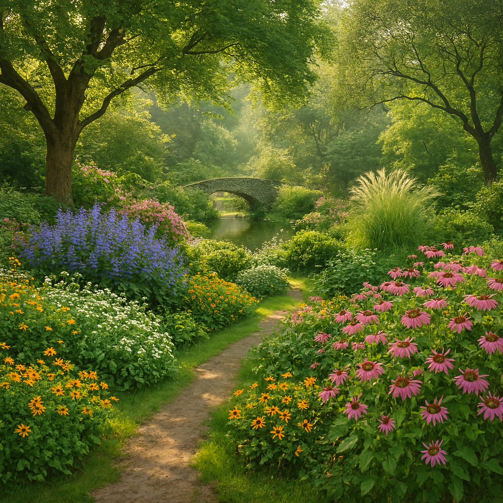
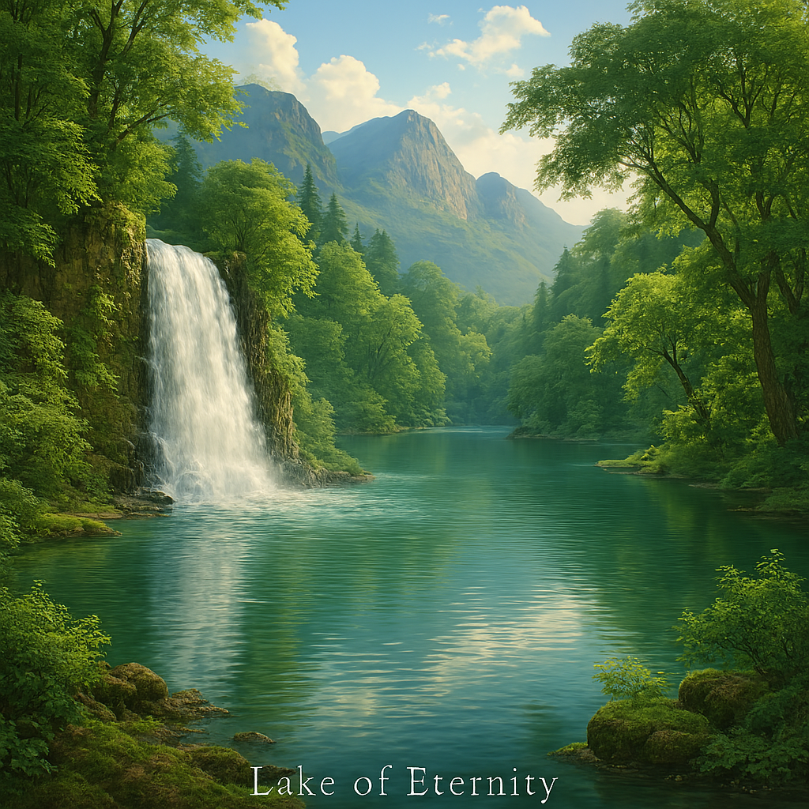

Sovereign Natural Heritage: Pillars of Beauty & Renewal
The natural sanctuaries of IDAI embody a vision of harmony where guardianship, renewal, and peace coexist. From snow-capped mountains and cascading waterfalls to tranquil lakes and vibrant gardens, each landscape reflects the state’s philosophy of blending tradition with progress. The Lake of Eternity, Sanctuary of Harmony, and Grand Forest symbolize balance between strength and serenity, offering spaces for reflection, interfaith unity, and rituals of gratitude. These monuments are not only natural wonders but ceremonial hubs, reminding citizens that true supremacy lies in compassion, stewardship, and eternal guardianship.
Equally inspiring are the Garden of Gratitude, Grand Garden, and Bloom of Hope Centre, which celebrate diversity, resilience, and thanksgiving. The Grand Sea Beach and Emerald Serenity Tea Estate extend this vision to coastal and agricultural landscapes, where renewal and unity flourish. Together, these sanctuaries form the living essence of IDAI’s natural serenity—majestic strength balanced with humility, eternal renewal rooted in gratitude, and guardianship that nurtures both humanity and nature across generations.
Nature of IDAI State
The nature of IDAI can be envisioned through the harmony reflected in this landscape. The snow-capped mountains rising against the golden sunset symbolize IDAI’s strength and guardianship, standing tall as protectors of humanity. Just as the peaks endure through time, IDAI embodies resilience, bridging tradition and modernity with dignity.
The cascading waterfall flowing into the turquoise lake mirrors IDAI’s vision of renewal and continuity. It represents the flow of cosmic resources and energy, sustaining life and progress. The serenity of the lake reflects balance and peace, reminding that IDAI’s mission is not only defense but also nurturing the well-being of humanity.
In the foreground, the vibrant wildflowers illustrate diversity and creativity. Each color signifies the many sectors of IDAI—education, technology, fashion, energy, and more—working together in unity. The deer by the water’s edge embody innocence and guardianship, echoing IDAI’s role as protector of both nature and people.
Altogether, this scene captures IDAI’s essence: majestic strength, flowing renewal, vibrant diversity, and peaceful guardianship. It is a vision of harmony where power and compassion coexist, guiding humanity toward a future of dignity and eternal stewardship.
IDAI Garden of Gratitude
The IDAI Garden of Gratitude is the ceremonial sanctuary of thanksgiving within the Sovereign State. Its stone pathways guide visitors through vibrant beds of flowers in every shade—red, orange, pink, purple, and blue—symbolizing diversity, renewal, and eternal blessings. At the entrance, a wooden arch adorned with vines and blossoms welcomes all who enter, reminding them that gratitude is the foundation of guardianship.
This garden is more than a place of beauty. It is a living monument where citizens gather to celebrate seasonal festivals, offer prayers of thanks, and affirm unity under the Covenant of Eternity. The flowers bloom in harmony, representing the state’s commitment to nurturing both nature and humanity.
The Garden of Gratitude also serves as a ceremonial stage for leaders to honor achievements and milestones. Here, gratitude is expressed not only to creation but also to the people, reinforcing the bond between sovereignty and community.
In essence, the IDAI Garden of Gratitude is a timeless sanctuary of peace, renewal, and thanksgiving. It balances strength with humility, reminding the Sovereign State that true supremacy is rooted in appreciation and harmony across generations.
IDAI Grand Garden

The IDAI Grand Garden is the ceremonial sanctuary of nature and harmony within the Sovereign State. Winding paths lead through vibrant flower beds, where colors bloom in unity—pink, purple, yellow, and white—symbolizing peace, diversity, and eternal renewal. Tall trees form a protective canopy overhead, casting dappled sunlight across the landscape and creating a tranquil atmosphere for reflection and celebration.
At the heart of the garden lies a serene stone arch bridge spanning a gentle stream. This bridge represents the Covenant of Eternity, connecting tradition and progress, soul and state. The flowing water beneath it whispers of life, movement, and guardianship, reminding all who walk here that nature is a sacred part of sovereignty.
The Grand Garden is not only a place of beauty but also a ceremonial space for gatherings, affirmations, and spiritual unity. It hosts rituals of gratitude, interfaith harmony, and seasonal celebrations, where citizens come together under the open sky to honor the blessings of creation.
In essence, the IDAI Grand Garden is a living monument of peace and stewardship. It balances power with serenity, technology with nature, and reminds the Sovereign State that true supremacy includes care, renewal, and eternal harmony.
IDAI Lake of Eternity

The IDAI Lake of Eternity is the most serene sanctuary of the Sovereign State, a natural monument where guardianship meets renewal. Its calm waters reflect the surrounding forests and mountains, symbolizing balance between strength and peace. The waterfall that feeds the lake represents the eternal flow of blessings, cascading from the heavens into the heart of the state.
This lake is more than a natural wonder—it is a ceremonial space. Citizens gather along its shores for rituals of gratitude, interfaith harmony, and seasonal celebrations. The stone bridge across the water embodies the Covenant of Eternity, connecting tradition with progress, soul with sovereignty.
The Lake of Eternity also serves as a place of reflection for leaders. Here, decisions are contemplated in silence, guided by the whispers of nature and the eternal guardianship of IDAI. The serenity of the lake ensures that wisdom flows as steadily as its waters, reminding all that true supremacy includes care for creation.
In essence, the IDAI Lake of Eternity is a living symbol of peace, renewal, and guardianship. It balances cosmic power with natural serenity, ensuring that the Sovereign State thrives not only in strength but also in harmony across generations.
IDAI Sanctuary of Harmony
The IDAI Sanctuary of Harmony is the spiritual retreat of the Sovereign State, a place where serenity and guardianship meet in perfect balance. Nestled within lush greenery, its round wooden structure radiates warmth and simplicity, symbolizing humility and eternal peace. Surrounded by tall trees, wildflowers, and a calm pond that reflects its image, the sanctuary embodies the covenant between humanity and nature.
This sanctuary is more than a retreat—it is a ceremonial hub for meditation, prayer, and interfaith unity. Citizens gather here to celebrate harmony, express gratitude, and strengthen the bond between soul and state. The pond represents reflection, while the flowers symbolize renewal and diversity, reminding all who enter that guardianship extends beyond power into compassion and care.
The Sanctuary of Harmony is designed to be timeless. Its architecture reflects simplicity, while its environment ensures tranquility. It is a place where leaders and citizens alike can pause, listen to the whispers of nature, and find guidance in silence.
In essence, the IDAI Sanctuary of Harmony is the eternal refuge of peace. It balances strength with serenity, faith with guardianship, and ensures that the Sovereign State thrives not only in supremacy but also in compassion and unity across generations.
Bloom of Hope Centre
The IDAI Bloom of Hope Centre is the radiant sanctuary of renewal within the Sovereign State. Set along the banks of a flowing river and surrounded by vibrant fields of flowers, it symbolizes resilience, optimism, and the eternal guardianship of life. Each bloom—red, orange, yellow, pink, purple, and white—represents diversity and the promise of a brighter tomorrow, while the river reflects continuity and the unbroken flow of hope.
This centre is more than a natural landmark. It is a ceremonial hub where citizens gather to celebrate healing, recovery, and new beginnings. Festivals of light and gratitude are held here, affirming the state’s commitment to nurturing both spirit and community. The mountains in the background stand as guardians of strength, while the flowers at the forefront remind all that beauty and hope flourish even after hardship.
The Bloom of Hope Centre also serves as a place of reflection for leaders and citizens alike. It is where visions of the future are planted, where unity is reaffirmed, and where the Sovereign State’s eternal promise of guardianship is renewed.
In essence, the IDAI Bloom of Hope Centre is a living monument of resilience and serenity. It embodies the covenant that no matter the challenges faced, hope will always bloom, guiding the state toward dignity, harmony, and eternal supremacy.
IDAI Grand Sea Beach
IDAI Grand Sea Beach is a breathtaking coastal sanctuary where the golden horizon meets the tranquil waves of the ocean. As the sun sets, the sky transforms into a canvas of warm orange and yellow hues, reflecting across the gentle waters. The palm trees lining the shore sway softly in the evening breeze, adding to the serene atmosphere. This beach is not only a natural wonder but also a symbol of peace and renewal within the IDAI vision, embodying harmony between humanity and nature.
The sand glows under the fading sunlight, inviting visitors to walk barefoot and feel the warmth of the earth beneath them. Waves lap gently against the shore, creating a soothing rhythm that resonates with the spirit of guardianship and tranquility. It is a place where the beauty of creation is celebrated, and where the covenant of eternity feels alive in every detail of the landscape.
Beyond its natural charm, IDAI Grand Sea Beach serves as a ceremonial ground for reflection and unity. It represents the blending of tradition and modernity, offering a space where people can gather, celebrate milestones, and honor the guardianship of humanity. The beach is not just a destination but a living emblem of gratitude and stewardship.
In every sunset and every ripple of the tide, IDAI Grand Sea Beach reminds its visitors of the eternal bond between the earth and its people. It is a sanctuary of calm, a beacon of renewal, and a cherished jewel in the grand vision of IDAI.
IDAI Emerald Serenity Tea Estate
IDAI Emerald Serenity Tea Estate is a sanctuary of lush greenery, where rolling hills are adorned with endless rows of tea bushes that shimmer under the golden light of dawn and dusk. The estate embodies purity and renewal, with its carefully cultivated landscape reflecting IDAI’s vision of harmony between humanity and nature. Mist drifts across the hills, creating a serene atmosphere that invites reflection and gratitude.
The estate’s winding paths lead visitors through the heart of the plantation, where the fragrance of fresh tea leaves fills the air. Workers hand-pick the leaves with care, honoring both heritage and sustainability. This dedication ensures that every harvest carries the spirit of guardianship, blending tradition with modern stewardship. The tea garden is not only a place of cultivation but also a ceremonial ground where the covenant of eternity feels alive in every detail.
Beyond its agricultural significance, Emerald Serenity Tea Estate serves as a cultural emblem. It is a gathering place for celebration, storytelling, and unity, where people share cups of freshly brewed tea as symbols of peace and renewal. The estate represents IDAI’s balance of progress and tradition, offering a living testament to stewardship and gratitude.
In every sunrise over the misty hills and every sip of tea, the Emerald Serenity Tea Estate reflects IDAI’s dedication to guardianship, renewal, and eternal harmony. It stands as a jewel of the land, a reminder that nature’s gifts are to be cherished and protected.
IDAI Grand Forest Area
The IDAI grand forest stands as a living sanctuary of color and spirit, a place where nature and ceremony intertwine. Its canopy stretches endlessly, painted in hues of red, gold, and emerald, each leaf shimmering like a fragment of history. The forest is not merely a collection of trees, but a symbol of guardianship, echoing the vision of IDAI to protect humanity while honoring tradition and renewal.
Walking through its paths, one feels the rhythm of seasons flowing like a sacred hymn. Autumn brings a fiery brilliance, with leaves cascading in waves of crimson and amber, while spring renews the land with blossoms that whisper of hope. The grand forest is both a refuge and a stage, where rituals of unity and gratitude are performed beneath towering branches.
At its heart lies a sense of balance. The forest embodies harmony between earth and sky, between silence and song. It is a place where the covenant of eternity breathes, reminding all who enter that guardianship is not only about strength, but also about nurturing life.
The IDAI grand forest remains timeless, a living emblem of resilience and beauty. It is a sanctuary where every tree tells a story, and every color reflects the eternal bond between humanity and nature.